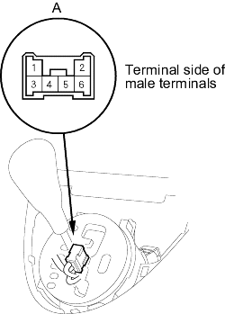

- Remove the shift lever console panel.
- Remove the D3 switch/shift lock solenoid connector (6P) (A) from the shift lever bracket base, then disconnect the connector.

- Connect the No. 1 terminal of the D3 switch/shift lock solenoid connector (6P) to the battery positive terminal and connect the No. 3 terminal to the battery negative terminal.
- Check that the shift lever can be moved from the
 position. Release the battery terminals from the D3 switch/shift lock solenoid connector. Move the shift lever back to the position and make sure it locks.
position. Release the battery terminals from the D3 switch/shift lock solenoid connector. Move the shift lever back to the position and make sure it locks.
NOTE: Do not connect power the No. 3 terminal (reverse polarity) or you will damage the diode inside the solenoid.
- If the shift lock solenoid does not work, remove the shift lever assembly (see page 14-79). Go to step 10, when the shift lock solenoid works properly.
- Remove the shift lock solenoid connector (2P) from the shift lever bracket base, then disconnect the connector (see page 14-82).
- Connect the No. 1 terminal of shift lock solenoid connector (2P) to the battery positive terminal and connector the No. 2 terminal to the battery negative terminal.
- Check that the shift lever can be moved from the position. Release the battery terminals from the shift lock solenoid connector. Move the shift lever back to the position and make sure it locks.
NOTE: Do not connect power to the No. 2 terminal (reverse polarity) or you will damage the diode inside the solenoid.
- If the shift lock solenoid does not work, replace it.
- Check that the shift lock releases when the shift lock release is pushed and check that it locks when the shift lock release is released.
- If the shift lock does not work properly, check that the shift lock mechanism.